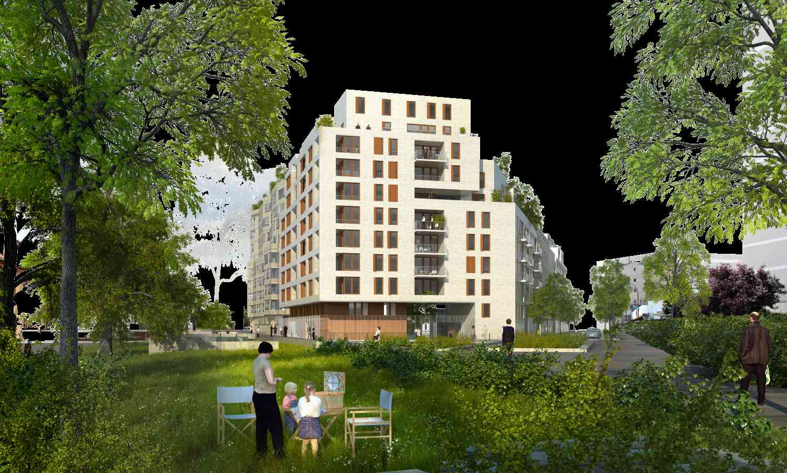

Survolez l'image et agrandissez/réduisez la vue à l'aide de la molette.
Budget: -
Surface: 6060 m2 (emprises bâties 3500 m2 ; espaces communs extérieurs, cours, chemins et jardins 2500 m2), Surface SHON : 21 574 m2
Date début: 2011
Date fin: -
Maîtrise d'ouvrage: RIVP (Régie immobilière de la Ville de Paris)
Co-traitant(s): bureau des paysages, mandataire Christian Dupraz architecte (Christian Dupraz, Véronique Iten)
Description:
A l’image de ce quartier parisien, la villa est apparue comme le modèle urbain le plus pertinent par l’association
de constructions de dimensions variables autour d’un système de rues, d’allées et de jardins. Aucune façade n’est
en contact direct avec les cheminements, ce qui donne à chaque construction une forme d’autonomie tout en marquant sa relation à un ensemble.
Ainsi le nombre d’étage des bâtiments varie en fonction des alignements de six à neuf niveaux au-dessus du rez-de-chaussée. Le relief assez prononcé du terrain guide l’organisation à l’intérieur de l’îlot au creux duquel se situe le jardin de la crèche en pleine terre. Un réseau de chemins et de passages dessine des traversées et ouvre
le cœur de l’îlot dans toutes les directions, créant ainsi une continuité entre la promenade plantée et le site jusqu’aux façades alignées sur les limites du terrain. Cette topographie prend en compte les bâtiments nouveaux et ceux qui sont déjà-là, tel le bâtiment de la chaufferie transformé en équipement culturel, en les associant au paysage de la villa. La brique, matériau noble et durable, inspirée par la façade de la chaufferie et par de nombreux bâtiments du quartier, marque l’unité de toutes les constructions. La lumière est dirigée par un plan et des perspectives sur la ville, apprivoisée par des matériaux qui la reflètent, filtrée par la végétation, transformée en énergie par les panneaux solaires sur les toits. Dans
les appartements sont privilégiés les dispositifs traversants, les balcons, terrasses ou loggias en prolongement
des pièces qui permettent de bénéficier de vues et du soleil. Partout où se porte le regard
se composent les scènes d’un paysage urbain, résidentiel et vivant.
{kind=link}
{kind=link}
{kind=link}
{kind=link}